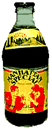
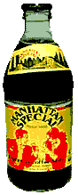
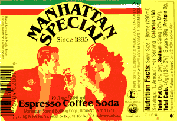

|  |  |
|  | |
|  |
MANHATTAN SPECIAL 6:30 am...another bloody day in the mines. You trudge to the F train, bleary, still half asleep, thinking coffee would do the trick. You pass the local Starbucks...bleh, past the hippie cafe (who wants to deal with a pseudo-beatnik at 6:45 am?) - forget it. Up ahead is the comforting yellow glow of the bodega. Upon entering to buy a pack of smokes you briefly contemplate a fifty cent cup of coffee made by the Dominican behind the counter, and quickly dispose of that idea. Deciding on a carton of the old stand-by ,Tropicana O.J., you shuffle to the back of the store, crushing a waterbug on your way to the refrigerator . As you reach for the O.J., you see, in the corner of your eye, something familiar...a yellow and red label - could it be? Do they still even make it anymore? But that label...its gotta be....yes it is!!! The solution to your daily indecision is sitting right there in your face. A twelve ounce bottle of Manhattan Special. As you board the same cattle car known as the F train that you’ve been riding every day for the last...something is different. You resist the urge to smile, to lick your chops, as that black nectar of the gods called Manhattan Special flows into your belly. The espresso is just right, with the perfect amount of carbonation...the caffeine gives you that extra bounce as you exit the train on 51st and Park...your day actually seems bearable. No doubt about it - since 1895, your friends in Greenpoint have been getting generations of Brooklynites through the daily grind. |
| Nutrition Facts:
Serv. Size: 1 bottle (296ml), Servings: 1 amount Per Serving: Calories 160, Total Fat 0g (0%) DV), Sodium 55mg (2% DV) Total Carb. 40g(13% DV), Sugars 39g, Protein 0g, Percent Daily Values are based on a 2,000 calorie diet |
Hand Brewed & Made From PURE COFFEE, CARBONATED WATER, SUGAR, CARMEL COLOR |